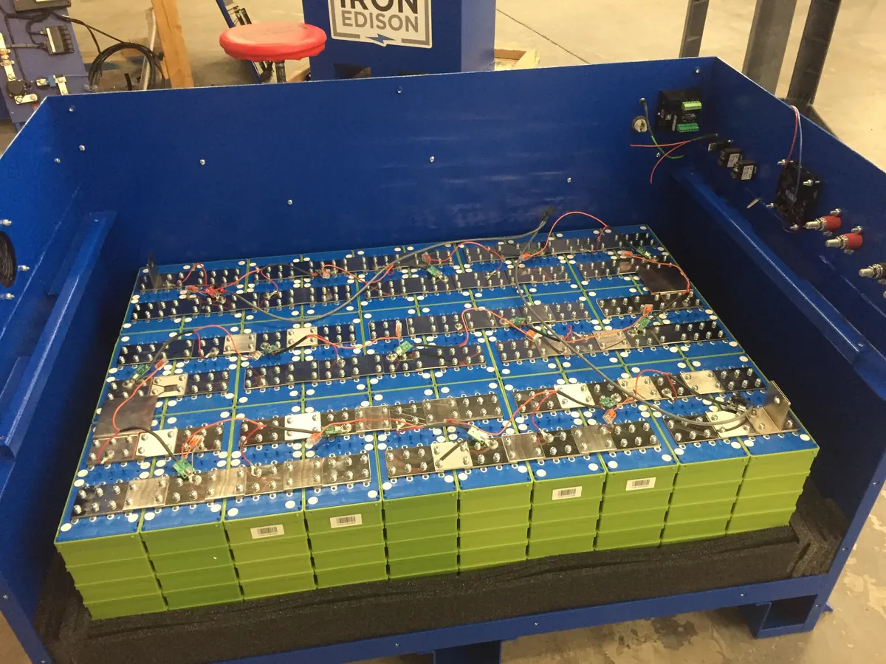

Mejores baterías LiFePO4 de 100 Ah: qué mirar antes de comprar
Dos baterías de 100 Ah pueden llevar la misma etiqueta, la misma química y una diferencia de precio del triple. La ficha técnica explica por qué, si sabes qué ocho líneas leer.
Esta guía contiene enlaces de afiliado: si compras a través de ellos recibimos una comisión sin coste adicional para ti. No recomendamos modelos concretos de batería suelta porque el mercado rota demasiado rápido para verificarlos. Cómo trabajamos.
El BMS y sus cinco protecciones
El BMS (sistema de gestión de batería) es la placa electrónica que va dentro y decide si la batería sobrevive. Es donde más se recorta en los modelos baratos y no se ve desde fuera. Debe cubrir cinco funciones, todas explícitas en la ficha:
- Sobrecarga. Corta cuando una celda pasa de unos 3,65 V. Sin ese corte, un regulador mal configurado destruye la celda.
- Sobredescarga. Corta por debajo de unos 2,5 V por celda. Una LiFePO4 dejada a cero durante semanas puede quedar inservible.
- Cortocircuito. Desconexión en milisegundos ante una corriente de falta.
- Temperatura. Cortes independientes para carga y descarga, por frío y por calor.
- Balanceo de celdas. Iguala la tensión de las cuatro celdas en serie. Sin él, la más débil llega antes al límite y el BMS corta la batería completa con energía aún en las otras tres: es la razón principal por la que una batería «pierde capacidad» al año de comprarla.
Si el vendedor no publica la corriente de corte ni menciona el balanceo, asume que el BMS es el más barato de ese mes.
Corriente máxima de descarga continua
Importa poco si solo alimentas luces y una nevera, y lo decide todo si llevas inversor. Un inversor de 2.000 W a 12 V no pide 166 A: hay que contar su rendimiento y que la batería no está a 12 V exactos.
2.000 W ÷ 0,89 de rendimiento ≈ 2.250 W de entrada. A los 12,2 V que tiene la batería bajo carga, son unos 185 A continuos. Un BMS de 100 A cortará la salida y el inversor se apagará cada vez que enciendas la inducción.
Para 2.000 W a 12 V necesitas un BMS de 200 A, o dos baterías de 100 A en paralelo. Es habitual que la ficha declare un pico generoso (200 A durante 5 segundos) junto a una continua mucho menor: manda la continua. Con un inversor de 1.000 W, 100 A bastan; a partir de 1.500 W, mira los 150-200 A.
Protección de carga a baja temperatura
Es el criterio que más baterías mata en furgonetas que pasan el invierno en el norte. El LiFePO4 se descarga sin problema bajo cero, pero cargarlo por debajo de 0 °C provoca deposición de litio metálico en el ánodo de grafito: pérdida irreversible que se acumula ciclo a ciclo y que, en casos avanzados, puede perforar el separador y causar un cortocircuito interno.
Hay dos soluciones válidas, y una batería seria implementa al menos la primera:
- Corte de carga por baja temperatura en el BMS. Rechaza la carga por debajo de 0 °C y la acepta al calentarse. Es lo mínimo exigible.
- Calentador interno autoalimentado. Usa parte de la corriente de carga para templar las celdas. Encarece la batería y es lo correcto si vas a esquiar o a pasar enero en Castilla.
Ojo con un detalle: muchas fichas anuncian un rango de trabajo de −20 a 60 °C sin distinguir carga y descarga. Ese es el de descarga. Busca explícitamente el de carga, que debería ser de 0 a 45 °C.
Celdas prismáticas grado A frente a celdas recicladas
Las celdas grado A son unidades nuevas que han pasado el control de capacidad y resistencia interna del fabricante. Las de grado B, y sobre todo las recuperadas de packs usados, llegan con dispersión: capacidades desiguales y autodescargas distintas. Cuatro celdas desiguales en serie rinden como la peor, y el balanceo del BMS compensa diferencias de tensión, no de capacidad.
Cómo detectarlo sin abrir la batería: las de grado A suelen indicar el formato prismático, publicar un ensayo de capacidad real y dar garantía de cinco años o más. Un precio muy por debajo del mercado con especificaciones idénticas al resto es la señal más fiable de que algo se ha recortado ahí dentro.
Capacidad real y capacidad nominal
Una batería de 100 Ah a 12,8 V nominales almacena 1,28 kWh. Ese es el dato de catálogo. Lo que puedes usar son dos números distintos:
- Capacidad medida. Un fabricante honesto declara la capacidad a una corriente concreta (por ejemplo 0,5 C, o 50 A) y a 25 °C. Fuera de ahí baja. Si la ficha no dice a qué régimen se midió, el 100 Ah es una aspiración.
- Capacidad útil. Con el 90 % de descarga admisible, de 1,28 kWh sacas unos 1,15 kWh. Si pasas por inversor, resta otro 10-15 %.
Por eso nuestra calculadora divide el consumo diario entre 0,76: combina descarga útil y rendimiento del inversor. Para 800 Wh diarios necesitas 1,05 kWh, es decir una de 100 Ah justa para un día sin sol.
Cómo calcular el coste por ciclo
Es el único número que permite comparar baterías de precios muy distintos. Dos fórmulas, la segunda más útil:
Coste por ciclo = precio ÷ ciclos
Coste por kWh entregado = precio ÷ (ciclos × kWh útiles)
Con cifras de mercado aproximadas, que conviene actualizar al comprar. Una LiFePO4 de 100 Ah a 320 €, 3.000 ciclos al 80 % y 1,15 kWh útiles: 320 ÷ 3.000 = 0,11 € por ciclo, y 320 ÷ (3.000 × 1,15) = 0,09 € por kWh almacenado.
La misma cuenta con una AGM de 100 Ah a 170 €, 400 ciclos y 0,6 kWh útiles: 0,43 € por ciclo y 0,71 € por kWh. La que costaba la mitad sale casi ocho veces más cara por energía entregada, y eso sin contar que la AGM se degrada mucho más rápido si la descargas más allá del 50 %.
Un matiz: «3.000 ciclos al 80 %» significa que tras 3.000 ciclos conserva el 80 % de capacidad, no que se muera. Compara siempre ciclos referidos al mismo umbral; 4.000 al 70 % y 3.000 al 80 % no son lo mismo.
LiFePO4 frente a AGM: los cuatro datos que deciden
| Criterio | LiFePO4 100 Ah | AGM / plomo 100 Ah |
|---|---|---|
| Descarga útil | 90 % · unos 1,15 kWh | 50 % · unos 0,6 kWh |
| Ciclos | 3.000-4.000 al 80 % | 300-500 al 80 % |
| Peso por kWh útil | unos 10 kg (12 kg de batería) | unos 45 kg (27 kg de batería) |
| Coste por ciclo | unos 0,11 € | unos 0,43 € |
Valores típicos de gama media en 2026; el coste por ciclo depende del precio del día. La diferencia de peso por kilovatio-hora útil es la que decide en un vehículo con carga máxima autorizada ajustada.
El plomo sigue teniendo sentido en dos casos: un sistema de cuatro fines de semana al año, donde nunca amortizarás los ciclos, y el arranque de un motor. Para el resto, la comparación no está reñida.
Certificaciones y garantía
Cuatro cosas verificables antes de pagar:
- Marcado CE y declaración de conformidad del producto, no solo de la celda.
- Informe UN 38.3, obligatorio para transportar baterías de litio. Su ausencia indica una cadena de suministro opaca.
- Ensayo de seguridad de celda según IEC 62619 o equivalente, cuando se publica.
- Garantía por escrito de cinco años o más, y sobre todo con quién se tramita: una garantía de diez años de un vendedor sin representación en la Unión Europea vale lo que cuesta enviar 12 kg a Shenzhen.
Nunca pongas en paralelo baterías de distinta química, capacidad o antigüedad: la más fuerte intentará cargar a la más débil y ningún BMS está pensado para eso. Si amplías, con una unidad idéntica y al mismo estado de carga.
Cuándo no comprar batería suelta
Una batería de 100 Ah sola no hace nada: necesita MPPT, inversor, fusibles, cable de sección adecuada y un sitio ventilado y sujeto donde vivir. Sale entre un 30 % y un 40 % más barata por vatio-hora que una estación portátil, pero cuesta un fin de semana de trabajo y criterio de seguridad eléctrica, que detallamos en la guía de instalación de un kit de 12 V.
Si no te apetece, una estación integra esas mismas celdas con BMS, MPPT e inversor en una caja certificada. Tienes las cinco que recomendamos en la comparativa 2026, y el panel que las alimenta en cuántos paneles solares necesito.
Ver estación LiFePO4 de 1 kWh Ver opción de 2 kWh
Preguntas frecuentes
¿Qué corriente de descarga necesito si llevo un inversor de 2.000 W?
Unos 185 A. A 12 V, 2.000 W de salida con el rendimiento del inversor suponen alrededor de 2.250 W de entrada, que a la tensión real de la batería en carga se traducen en unos 185 A continuos. Una batería con BMS de 100 A se cortará antes de llegar.
¿Se puede cargar una batería LiFePO4 por debajo de cero grados?
No sin dañarla. Por debajo de 0 °C aparece deposición de litio metálico en el ánodo, que es pérdida de capacidad irreversible y riesgo de cortocircuito interno. La batería debe tener corte de carga por baja temperatura en el BMS o calentador interno; descargarla en frío sí está permitido.
¿Cuánta capacidad real aprovecho de una batería de 100 Ah?
Unos 90 Ah, es decir en torno a 1,15 kWh de los 1,28 kWh nominales, porque el LiFePO4 admite descargas del 90 % sin penalización relevante de vida. Con una batería de plomo o AGM equivalente solo deberías usar el 50 %, unos 0,6 kWh.
¿Cómo se calcula el coste por ciclo de una batería?
Divide el precio entre el número de ciclos declarado para el coste por ciclo, y entre los ciclos multiplicados por los kWh útiles para el coste por kilovatio-hora entregado. Una LiFePO4 de 100 Ah con 3.000 ciclos suele quedar en torno a diez céntimos por ciclo, entre seis y ocho veces mejor que una AGM.
Redacción de Estacionportatil. Esta guía describe criterios verificables en la ficha técnica en lugar de recomendar modelos de batería suelta, porque el catálogo rota más rápido de lo que podemos contrastarlo. Puedes leer nuestra metodología. Última revisión: septiembre de 2026.